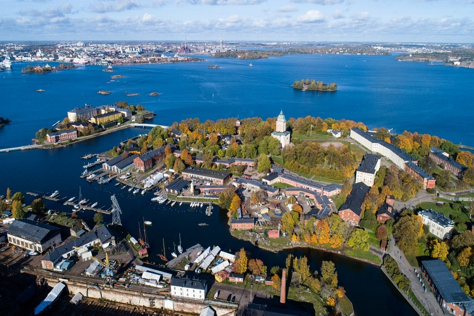

Suomenlinna
Suomenlinna on historiallinen merilinnoitus Helsingin edustalla, ja se on yksi UNESCOn maailmanperintökohteista. Linnoitus rakennettiin 1700-luvun alussa suojaksi Ruotsin ja Venäjän välisten konfliktien aikana.
Reittiohjeet
Suomenlinna on historiallinen merilinnoitus Helsingin edustalla, ja se on yksi UNESCOn maailmanperintökohteista. Linnoitus rakennettiin 1700-luvun alussa suojaksi Ruotsin ja Venäjän välisten konfliktien aikana.